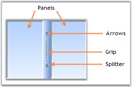
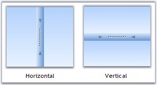
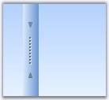
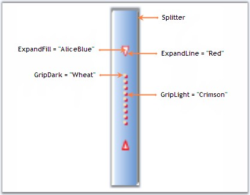
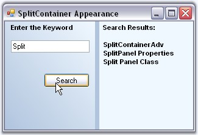
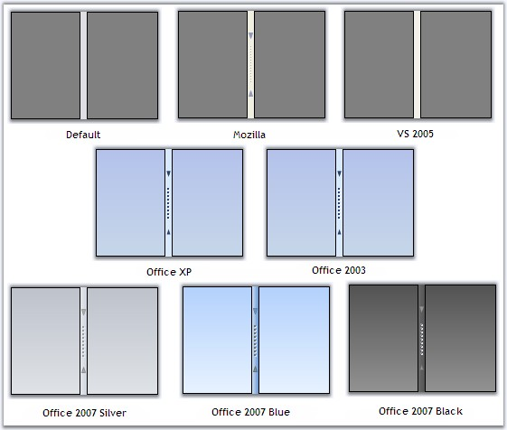

This section will guide you in getting started with the SplitContainerAdv control. It explains all the concepts and features of the control in detail.
The below image illustrates the components of a SplitContainerAdv control. It has two panels separated by a splitter, which has arrows and a grip for the splitter.

Figure 419: SplitContainerAdv Illustrated with its Components
A sample which demonstrates the SplitContainerAdv control is available in the below sample installation location.
..\My Documents\Syncfusion\EssentialStudio\Version Number\Windows\Tools.Windows\Samples\2.0\Editors Package\Container controls\SplitContainerAdv
See Also
This section discusses about various properties available for the SplitContainerAdv to control the behavior of the panels. The panels has properties and events similar to Window's Panel control, to change its appearance.
Panel Orientation
The SplitContainerAdv Panels can be oriented horizontally or vertically using the Orientation property. Default value is horizontal.
|
[C#]
this.splitContainerAdv1.Orientation = System.Windows.Forms.Orientation.Vertical; |
|
[VB.NET]
Me.splitContainerAdv1.Orientation = System.Windows.Forms.Orientation.Vertical |

Figure 420: Panel Orientation
Resizing the Panels
While resizing the control at design time or at run time, we can make one panel as fixed and resize the other panel alone. Select the panel which needs to be fixed, in FixedPanel property.
|
[C#]
this.SplitContainerAdv1.FixedPanel = Syncfusion.Windows.Forms.Tools.Enums.FixedPanel.Panel1 |
|
[VB.NET]
Me.SplitContainerAdv1.FixedPanel = Syncfusion.Windows.Forms.Tools.Enums.FixedPanel.Panel1 |
Collapsing a Panel
We can make any of the panels to be collapsed at run time. The below properties helps you to do that.
|
SplitContainerAdv Properties |
Description |
|
Panel1 |
Gives properties of the panel1 which represents the first panel to the left of the Splitter. |
|
Panel1Collapsed |
Indicates if the Panel1 is collapsed or not. |
|
Panel2 |
Gives properties of the panel2 which represents the last or the second panel to the right of the Splitter. |
|
Panel2Collapsed |
Indicates if the Panel2 is collapsed or not. |
|
PanelToBeCollapsed |
Sets the panel to be collapsed when a predefined event occurs on it. |
|
TogglePanelOn |
A predefined event, which leads to collapsing of the panel specified in PanelToBeCollapsed property. Using TogglePanelOn property, we can decide whether, the panel needs to be collapsed on a single click or a double click. |
|
[C#]
this.splitContainerAdv1.Panel1Collapsed = true; this.splitContainerAdv1.Panel2Collapsed = false; this.splitContainerAdv1.PanelToBeCollapsed = Syncfusion.Windows.Forms.Tools.CollapsedPanel.Panel1; this.splitContainerAdv1.TogglePanelOn = Syncfusion.Windows.Forms.Tools.TogglePanelOn.DoubleClick; |
|
[VB.NET]
Me.SplitContainerAdv1.Panel1Collapsed = True Me.SplitContainerAdv1.Panel2Collapsed = False Me.splitContainerAdv1.PanelToBeCollapsed = Syncfusion.Windows.Forms.Tools.CollapsedPanel.Panel1 Me.splitContainerAdv1.TogglePanelOn = Syncfusion.Windows.Forms.Tools.TogglePanelOn.DoubleClick |
Panel Size
We can specify the minimum size for the Panel1 and Panel2 in Panel1MinSize and Panel2MinSize properties. Default value for both the properties is 25.
|
[C#]
this.splitContainerAdv1.Panel1MinSize = 50; this.splitContainerAdv1.Panel2MinSize = 50; |
|
[VB.NET]
Me.splitContainerAdv1.Panel1MinSize = 50 Me.splitContainerAdv1.Panel2MinSize = 50 |
3.3.6.4.3.1.2 Splitter Settings
The properties which changes the behavior of the Splitter in a SplitContainerAdv control are discussed in this section.
Splitter Settings
The below table describes the properties to control the behavior of the splitter.
|
SplitContainerAdv Properties |
Description |
|
IsSplitterFixed |
Gets / sets whether the user is allowed to move the splitter or not. Default value is false. |
|
SplitterDistance |
Indicates the distance from the left top border. |
|
SplitterIncrement |
Determines the number of pixels the splitter moves in each increment. |
|
SplitterWidth |
Indicates the width of the splitter. |
|
[C#]
this.SplitContainerAdv1.IsSplitterFixed = true; this.splitContainerAdv1.SplitterDistance = 25 this.splitContainerAdv1.SplitterIncrement = 5 this.splitContainerAdv1.SplitterWidth = 20 |
|
[VB.NET]
Me.SplitContainerAdv1.IsSplitterFixed = True Me.splitContainerAdv1.SplitterDistance = 25 Me.splitContainerAdv1.SplitterIncrement = 5 Me.splitContainerAdv1.SplitterWidth = 20 |

Figure 421: SplitterDistance = "25"; SplitterWidth = "20"
3.3.6.4.3.1.2.1 Thumbnail Arrow and Grip Settings
SplitContainerAdv control supports various appearance settings for the ThumbnailArrow in the control which are discussed in detail below. The properties which control the appearance of the splitter components are as follows.
|
SplitContainerAdv Properties |
Description |
|
ExpandFill |
Sets the color for the arrows. |
|
ExpandLine |
Sets the outline color for the arrows. |
|
GripDark |
Sets color for the grip. |
|
GridLight |
Sets the shadow around the grip. |
|
[C#]
this.splitContainerAdv2.ExpandFill = new Syncfusion.Drawing.BrushInfo(System.Drawing.Color.AliceBlue); this.splitContainerAdv2.ExpandLine = System.Drawing.Color.Red; this.splitContainerAdv2.GripDark = new Syncfusion.Drawing.BrushInfo(System.Drawing.Color.Wheat); this.splitContainerAdv2.GripLight = new Syncfusion.Drawing.BrushInfo(System.Drawing.Color.Crimson); |
|
[VB.NET]
Me.splitContainerAdv2.ExpandFill = New Syncfusion.Drawing.BrushInfo(System.Drawing.Color.AliceBlue) Me.splitContainerAdv2.ExpandLine = System.Drawing.Color.Red Me.splitContainerAdv2.GripDark = New Syncfusion.Drawing.BrushInfo(System.Drawing.Color.Wheat) Me.splitContainerAdv2.GripLight = New Syncfusion.Drawing.BrushInfo(System.Drawing.Color.Crimson) |

Figure 422: Splitter with Appearance Settings
RunTime Appearance
The properties to control the appearance of the thumbnail arrows, and grip, while mouse hovering at runtime, are as follows.
|
SplitContainerAdv Properties |
Description |
|
HotBackgroundColor |
Sets the background color of the Thumbnail while under mouse cursor. |
|
HotExpandFill |
Sets the color for the arrows while under mouse cursor. |
|
HotExpandLine |
Sets the outline color for the arrows while under mouse cursor. |
|
HotGripDark |
Sets color for the grip while under mouse cursor. |
|
HotGridLight |
Sets the shadow around the grip while under mouse cursor. |
|
[C#]
this.splitContainerAdv2.HotBackgroundColor = new Syncfusion.Drawing.BrushInfo(Syncfusion.Drawing.GradientStyle.Horizontal, System.Drawing.Color.SandyBrown, System.Drawing.Color.AntiqueWhite); this.splitContainerAdv2.HotExpandFill = new Syncfusion.Drawing.BrushInfo(System.Drawing.Color.Red); this.splitContainerAdv2.HotExpandLine = System.Drawing.Color.DeepPink; this.splitContainerAdv2.HotGripDark = new Syncfusion.Drawing.BrushInfo(System.Drawing.Color.MistyRose); this.splitContainerAdv2.HotGripLight = new Syncfusion.Drawing.BrushInfo(System.Drawing.Color.Purple); |
|
[VB.NET]
Me.splitContainerAdv2.HotBackgroundColor = New Syncfusion.Drawing.BrushInfo(Syncfusion.Drawing.GradientStyle.Horizontal, System.Drawing.Color.SandyBrown, System.Drawing.Color.AntiqueWhite) Me.splitContainerAdv2.HotExpandFill = New Syncfusion.Drawing.BrushInfo(System.Drawing.Color.Red) Me.splitContainerAdv2.HotExpandLine = System.Drawing.Color.DeepPink Me.splitContainerAdv2.HotGripDark = New Syncfusion.Drawing.BrushInfo(System.Drawing.Color.MistyRose) Me.splitContainerAdv2.HotGripLight = New Syncfusion.Drawing.BrushInfo(System.Drawing.Color.Purple) |
Figure 423: Appearance Settings on Mouse Hovering at Run Time
3.3.6.4.3.1.3 Appearance Settings
This section discusses the properties which controls the appearance of the SplitContainerAdv control.
Background Settings
The below table describes the background settings.
|
SplitContainerAdv Properties |
Description |
|
BackgroundImage |
Sets the background image for the control. |
|
BackgroundImageLayout |
Specifies the background image layout. |
|
BackColor |
Sets the background color for the control. |
|
BackgroundColor |
Sets the solid, gradient or pattern style background for the control. |
 Note: The above properties can be
overridden by SplitContainerAdv.Panel properties.
Note: The above properties can be
overridden by SplitContainerAdv.Panel properties.
|
[C#]
this.splitContainerAdv1.BackColor = System.Drawing.Color.LightSteelBlue; this.splitContainerAdv1.Panel1.BackgroundColor = new Syncfusion.Drawing.BrushInfo(Syncfusion.Drawing.GradientStyle.BackwardDiagonal, System.Drawing.Color.AliceBlue, System.Drawing.Color.LightSteelBlue); this.splitContainerAdv1.Panel2.BackColor = System.Drawing.Color.AliceBlue; |
|
[VB.NET]
Me.splitContainerAdv1.BackColor = System.Drawing.Color.LightSteelBlue Me.splitContainerAdv1.Panel1.BackgroundColor = New Syncfusion.Drawing.BrushInfo(Syncfusion.Drawing.GradientStyle.BackwardDiagonal, System.Drawing.Color.AliceBlue, System.Drawing.Color.LightSteelBlue) Me.splitContainerAdv1.Panel2.BackColor = System.Drawing.Color.AliceBlue |
Foreground Settings
The below table describes the foreground settings.
|
SplitContainerAdv Properties |
Description |
|
Font |
Sets the font style for the display text in the control. |
|
ForeColor |
Sets the color for the display text in the control. |
|
[C#]
this.splitContainerAdv1.Panel2.Font = new System.Drawing.Font("Arial", 8.25F, System.Drawing.FontStyle.Bold); this.splitContainerAdv1.Panel1.ForeColor = System.Drawing.Color.Black; |
|
[VB.NET]
Me.splitContainerAdv1.Panel2.Font = New System.Drawing.Font("Arial", 8.25F, System.Drawing.FontStyle.Bold) Me.splitContainerAdv1.Panel1.ForeColor = System.Drawing.Color.Black |

Figure 424: SplitContainerAdv Control with Appearance Settings
Border Settings
BorderStyle property sets 2D or 3D border for the SplitContainerAdv control. The options are FixedSingle or Fixed3D.
|
[C#]
this.splitContainerAdv1.BorderStyle = System.Windows.Forms.BorderStyle.FixedSingle; |
|
[VB.NET]
Me.splitContainerAdv1.BorderStyle = System.Windows.Forms.BorderStyle.FixedSingle |
Visual Styles for the SplitContainerAdv control is set through Style property. The available styles are,
· Office2007Black,
· Office2007Blue,
· Office2007Silver,
· OfficeXP,
· Office2003,
· VS2005,
· Mozilla and
· Default.
|
[C#]
//Sets Office2007 Black color scheme for the control. this.splitContainerAdv1.Style = Syncfusion.Windows.Forms.Tools.Style.Office2007Black; |
|
[VB.NET]
'Sets Office2007 Black color scheme for the control. Me.splitContainerAdv1.Style = Syncfusion.Windows.Forms.Tools.Style.Office2007Black |

Figure 425: Visual Styles for SplitContainerAdv
See Also